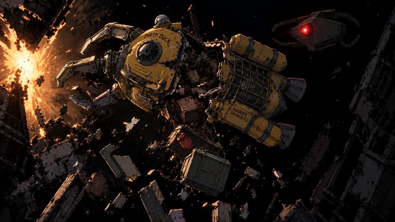
궤도의 잔해를 건져 팔고, 배를 키워 더 먼 궤도로 나가는 우주 화물 회수 게임
회수 사업부 자동 안내 — 오늘도 안전한 회수 되십시오.
위성·로켓에 붙어 칸을 열고 화물을 담는다. 열어 봐야 뭔지 안다.
정거장에 돌아와 화물마다 팔거나, 팔지 않고 락커에 둔다.
판 돈으로 배를 바꾼다. 스크랩 드론에서 수거정, 화물선으로. 배가 커질수록 칸이 늘고 더 먼 궤도가 열린다.
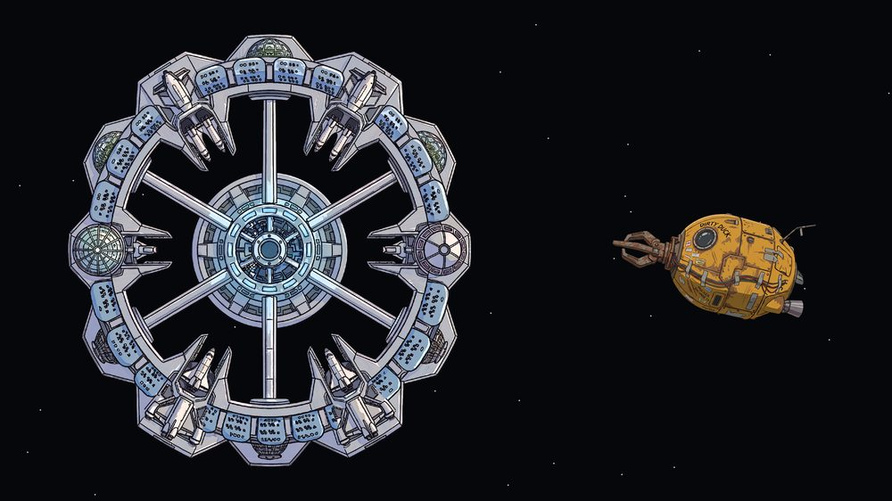
정거장에서 나간다. 마우스 포인터 쪽으로 밀리고, 멀수록 빠르다.
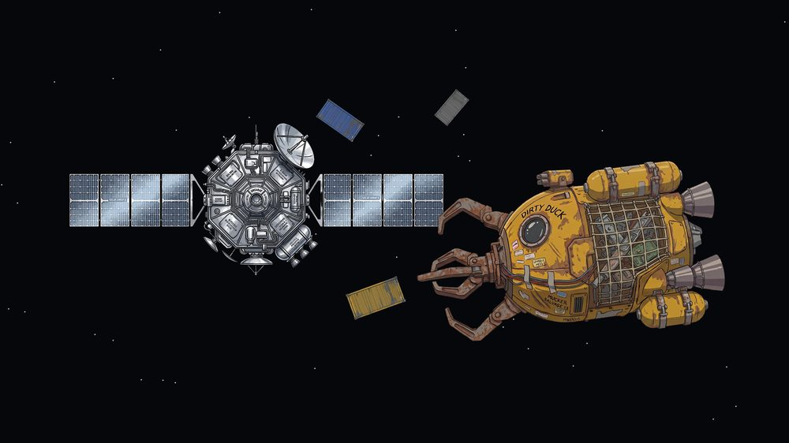
위성·로켓에 붙으면 칸이 열린다. 클릭해서 담는다. 열수록 시끄럽다.
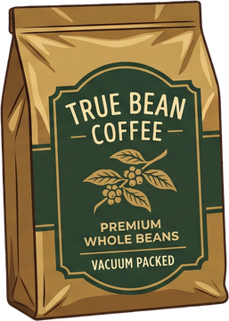
진짜 원두 커피78,000 CR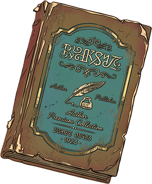
종이책90,000 CR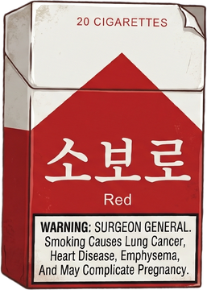
20세기 담배130,000 CR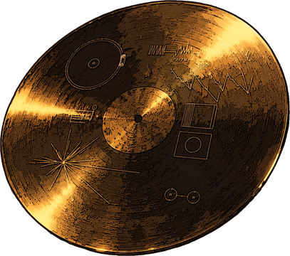
골든 레코드정거장 감정 불가정거장에 대면 화물마다 판다. 아니면 락커에 둔다. 옛 지구의 물건일수록 비싸다.
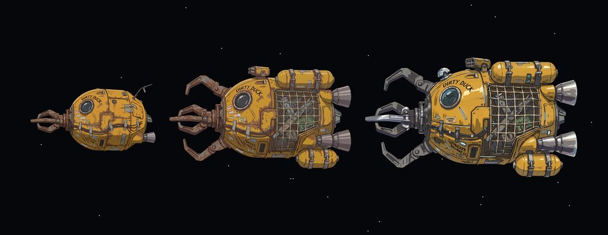
판 돈으로 배를 바꾼다. 스크랩 드론에서 수거정, 화물선으로. 배가 커질수록 칸이 늘고 더 먼 궤도가 열린다.
연료가 곧 목숨. 움직여도 줄고 부딪히면 샌다. 0이면 견인되고 싣고 있던 화물을 잃는다.
스위퍼는 소음을 쫓는다. 열수록, 밀수록 시끄럽다. 엔진을 끄면 파편처럼 조용히 흘러간다.
붉은 칸은 장비. 요격 포탑, 부스터, 택배 상자. 팔지 말고 슬롯에 단다.
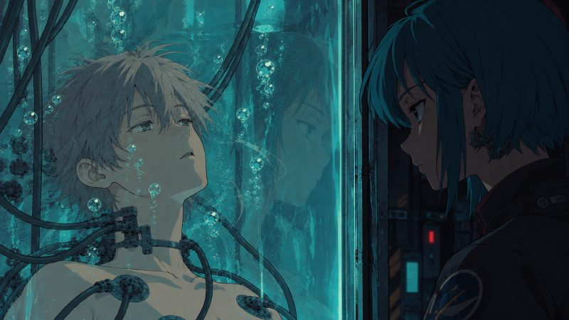
지구는 회색으로 죽었고, 사람은 궤도 정거장에 산다. 궤도를 띠처럼 도는 위성·로켓 잔해가 곧 돈이다. 옛 지구의 물건, 진짜 커피와 종이책과 레코드가 제일 비싸다.
플레이어는 회사에 빚진 회수원, 자산 T-07. 사고가 나면 회사 보험으로 "복구"되고 그 비용은 빚에 붙는다. 헬멧 무전 너머 아리아가 말한다. 잃어버린 배가 더 높은 궤도에 아직 떠 있다고.
"…프로토콜은 여기까지. 일어나. 네 배는 아직 저 위에 있어."
아리아 · 담당 관리자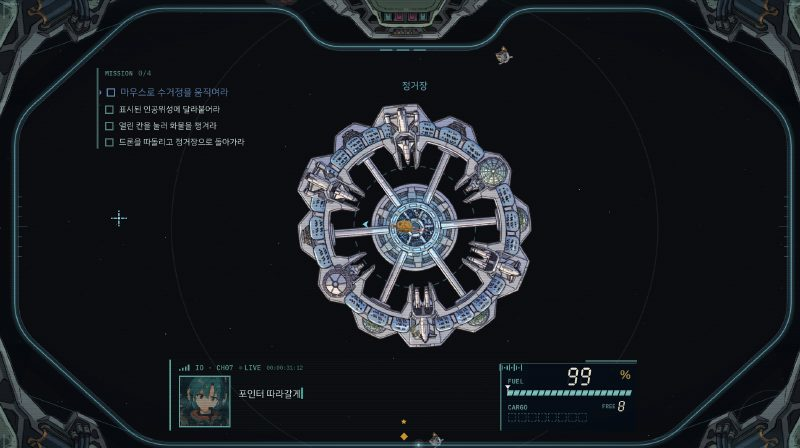
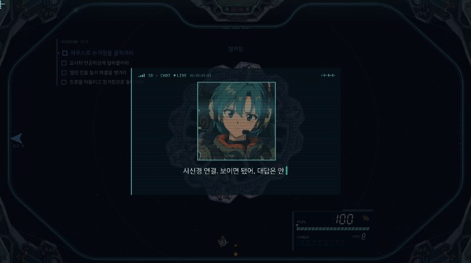
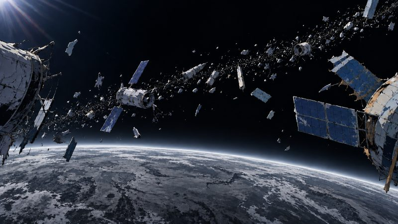
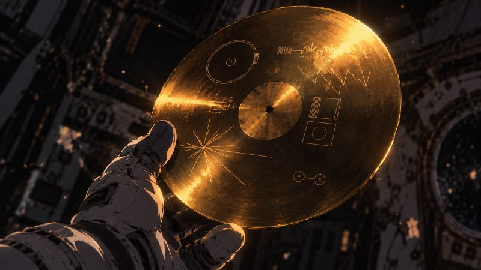
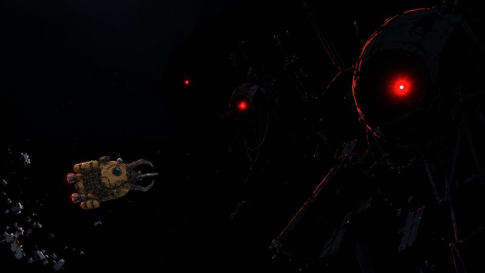
순천향대학교 메타버스&게임학과 · 미래게임잼 최우수상 · Unity, PC · 지스타 데모 15분